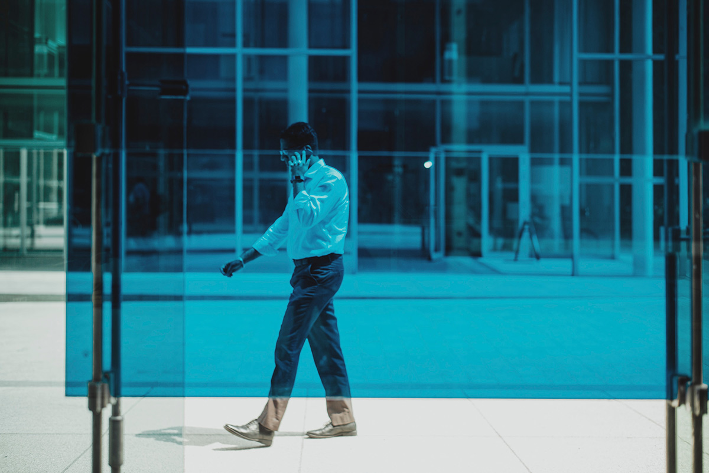
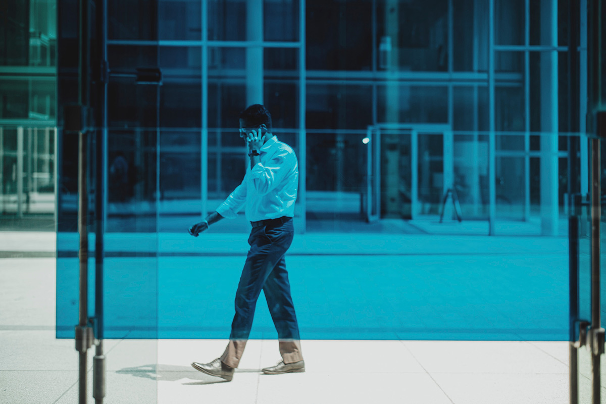

Grundlæggende Web
I Tema 2 lærte vi gennem designanalyse, at genkende og anvende specifikke stilarter i udviklingen af vores site. Vi gik igennem processen fra brief til moodboard til styletile, og blev derved bevidste om betydningen af en opgaves formulering og en stilarts træk,for de endelige designvalg. Ud fra designanalysen, der gik i dybden med elementer som fonte, farver og komposition, skabte vi det styletile, vi dernæst kunne designe ud fra.
Min gruppe blev tildelt stilarten Modern futuristic, 3D and flourescent. Den kendetegnes ved stærke, flourescerende farver, stor brug af white space og ofte gerne 3D-effekter. Den har en “fremtidsfølelse” over sig, og ofte en drømmende tone of voice.
I mit design valgte jeg først og fremmest, at holde mig til en farveharmoni af blå toner, og bruge disse forholdsvis monokromatisk. Farverne går igen i illustreret splashbillede, valgte fotos og andre designelementer. Derudover havde jeg i mit valg af copy, og tema herfor, fokus på “fremtidsfølelsen” i stilarten. Med overskrifter som “Hvem ser med?”, “Bigbrother?” og “Nye gadgets”, blev det futuriske i stilarten overført til mit tema, overvågning.
I Grundlæggende web blev vi yderligere introduceret til basen for kodning i HTML og CSS. Vi blev givet et forud produceret wireframe, samt et layoutdiagram. Wireframen havde en tydelig rytme i layoutet, og gav os introduktion til differentiering i grid opsætning af sitet.